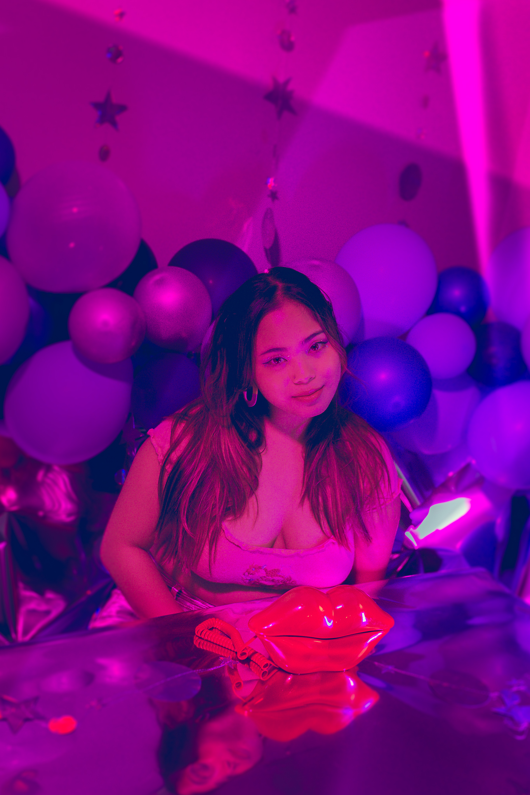
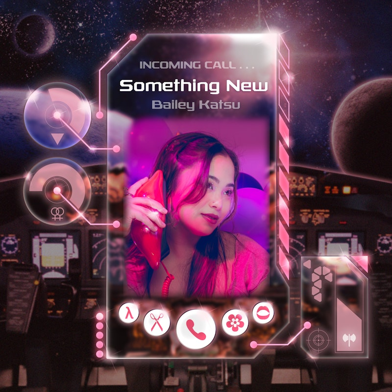

Pop-rock singer-songwriter. Queer. Japanese-American. Boston.

Photo by Conor "Spiff" — cophotos.net
Bailey Katsu is a queer, Japanese-American singer-songwriter and powerhouse vocalist based in Boston. Her solo project is pop-rock driven — emotionally direct, melodically sharp, and rooted in the euphoria and anxiety of navigating queerness and identity in real time.
Known for her rich, expressive tone and magnetic stage presence, Bailey brings unmatched energy to every performance. She is also the lead singer and marketing director of The Femmes, an all-women and nonbinary band celebrated throughout New England and beyond.
Her debut single "Something New" is out now on all platforms. Bailey is releasing a series of singles throughout 2026, with plans to eventually bundle them — alongside potential live recordings — into a full album. Press has compared her voice to Olivia Rodrigo and Renée Rapp, and Electric Lady Magazine called her "una nueva promesa dentro de la escena musical alternativa."
"Her voice reminds us of artists like Olivia Rodrigo or Renée Rapp, and positions Katsu as a new promise within the alternative music scene. Bailey Katsu arrives with an authenticity that is impossible to ignore."— Electric Lady Magazine

More singles coming throughout 2026
Club Café — Moonshine Room · 209 Columbus Ave, Boston · Doors 6:30 PM / Show 8 PM
Buy TicketsThe Middle East · Cambridge, MA · Doors 8 PM · w/ Olivia Dolphin Band & Zola Simone
Buy TicketsAll photos by Conor "Spiff" — cophotos.net · @spiffsphotos. For hi-res downloads, contact baileykat19@gmail.com.